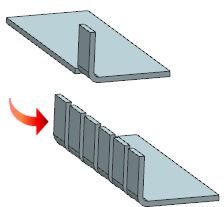
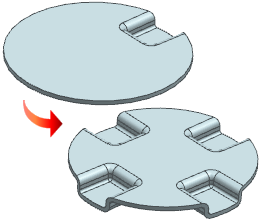

Estimated time to complete this lesson: 5–7 minutes
The Pattern Feature command is now available in the NX Sheet Metal application. You can create patterns of Sheet Metal features such as tabs, flanges, bends, jogs and so on.
The examples show a linear pattern of flanges and a circular pattern of dimples.
|
 |
 |
|
Note |
NX Sheet Metal supports only the Variational type of pattern method. |
Use this command to create a pattern of NX Sheet Metal features.
|
Application |
NX Sheet Metal |
|
Menu |
Insert→Associative Copy→Pattern Feature |